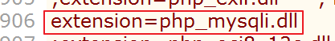
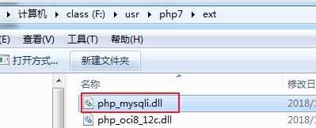
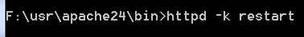
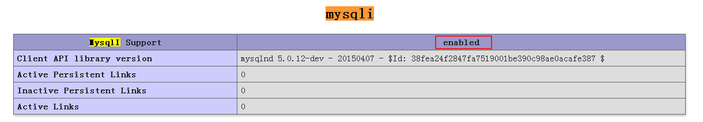

MYSQLI扩展
1. MYSQLI的概念
为什么使用MYSQLI扩展
1 | note left of PHP: 通过MYSQLi进行操作 |
==小结==：PHP可以通过使用MYSQLI实现对MYSQL数据库进行操作。
什么是MYSQLI扩展
概念：MYSQLI扩展即PHP利用MYSQL提供的语言操作接口，==封装==出来的一系列操作MYSQL数据库的==函数==和操作类。
2. ==MYSQLI扩展的使用==
MYSQLI是PHP中的一个==扩展==，扩展的意思即不是默认就自带支持的，而是需要通过额外引入才能使用的。
所以我们在使用之前，需要先将MYSQLI扩展引入进PHP。
引入MYSQLI扩展
==步骤==：
第一步，打开PHP的配置文件php.ini,去掉php_mysqli.dll前面的注释符号”；”
第二步，配置php.ini中的extension_dir配置项，
第三步，确认在extension_dir配置的目录中php_mysqli.dll文件是存在的，

第四步，重启apache，测试是否开启成功
重启apache成功

测试mysqli开启是否成功
在code1.php中构建phpinfo()函数，访问code1.php，查看到如下图所示的mysqli配置项，

如果看到上图，则说明mysqli开启配置成功。
回顾黑窗口对MYSQL数据表数据的基本操作
- 执行连接数据库相关操作（连接数据库，选择数据库，设置字符集）；
- 设置操作（包括：增删改操作）
- 查询操作
使用MYSQLI实现连库基本操作
使用MYSQLI实现连库基本操作 相当于 打开黑窗口==连接数据库==，==选择默认的数据库==和==设置字符集==操作。
涉及的函数：
mysqli_connect(数据库ip地址, 帐号, 密码, 默认选择的数据库)
mysqli_set_charset(mysqli连接, 字符集编码)
mysqli_select_db(mysqli连接, 数据库名)
==操作需求1==：使用MYSQLI实现连接数据库，选择默认的数据库为test，设置字符集为utf8操作。
==解答==：构建code2.php程序页面，代码如下
1 |
|
输出操作的结果：
1 | ####输出的操作结果为： |
==操作需求2==：在”操作需求1”的基础上，实现切换选择数据库为db1数据库操作。
==解答==：构建code3.php程序页面，代码如下
1 |
|
输出操作的结果：
1 | ####输出的操作结果为： |
==小结==：
- mysqli_connect函数可以实现连接数据库和选择默认的数据库操作；
- mysqli_set_charset函数可以实现设置字符集操作；
- mysqli_select_db函数可以实现切换选择新的数据库操作；
使用MYSQLI实现关闭数据库连接操作
使用MYSQLI实现关闭数据库操作 相当于 在黑窗口==退出数据库==操作。
涉及的函数：
mysqli_close(mysqli连接)
==操作需求==：使用MYSQLI实现关闭数据库操作。
==解答==：构建code4.php程序页面，代码如下
1 |
|
输出操作的结果：
1 | ####输出的操作结果为： |
==小结==：
mysqli_close函数的作用就是用来关闭mysqli数据库连接的。
使用MYSQLI实现设置(增删改)操作
使用MYSQLI实现设置操作 相当于 在黑窗口实现对数据表数据==执行增、删、改SQL语句==操作。
涉及的函数：
mysqli_query(mysqli连接, sql语句) 对数据库执行一次查询
==操作需求1==：使用MYSQLI操作test数据库中的cz_user表，实现往数据表cz_user中新增一条数据的操作。
==解答==：构建code5.php程序页面，代码如下
1 |
|
输出的结果如下
1 | object(mysqli)#1 (19) { ["affected_rows"]=> int(0) ["client_info"]=> string(79) "mysqlnd 5.0.12-dev - 20150407 - $Id: 38fea24f2847fa7519001be390c98ae0acafe387 $" ["client_version"]=> int(50012) ["connect_errno"]=> int(0) ["connect_error"]=> NULL ["errno"]=> int(0) ["error"]=> string(0) "" ["error_list"]=> array(0) { } ["field_count"]=> int(0) ["host_info"]=> string(20) "localhost via TCP/IP" ["info"]=> NULL ["insert_id"]=> int(0) ["server_info"]=> string(6) "5.5.24" ["server_version"]=> int(50524) ["stat"]=> string(131) "Uptime: 8221 Threads: 2 Questions: 24 Slow queries: 0 Opens: 34 Flush tables: 1 Open tables: 1 Queries per second avg: 0.002" ["sqlstate"]=> string(5) "00000" ["protocol_version"]=> int(10) ["thread_id"]=> int(18) ["warning_count"]=> int(0) } |
==操作需求2==：使用MYSQLI操作test数据库中的cz_user表，实现修改id为4的数据pwd的值为”1234abcd”。
==解答==：构建code6.php程序页面，代码如下
1 |
|
输出的结果如下
1 | object(mysqli)#1 (19) { ["affected_rows"]=> int(0) ["client_info"]=> string(79) "mysqlnd 5.0.12-dev - 20150407 - $Id: 38fea24f2847fa7519001be390c98ae0acafe387 $" ["client_version"]=> int(50012) ["connect_errno"]=> int(0) ["connect_error"]=> NULL ["errno"]=> int(0) ["error"]=> string(0) "" ["error_list"]=> array(0) { } ["field_count"]=> int(0) ["host_info"]=> string(20) "localhost via TCP/IP" ["info"]=> NULL ["insert_id"]=> int(0) ["server_info"]=> string(6) "5.5.24" ["server_version"]=> int(50524) ["stat"]=> string(131) "Uptime: 8358 Threads: 2 Questions: 28 Slow queries: 0 Opens: 34 Flush tables: 1 Open tables: 1 Queries per second avg: 0.003" ["sqlstate"]=> string(5) "00000" ["protocol_version"]=> int(10) ["thread_id"]=> int(19) ["warning_count"]=> int(0) } |
==操作需求3==：使用MYSQLI操作test数据库中的cz_user表，删除id为5的数据。
==解答==：构建code7.php程序页面，代码如下
1 |
|
输出的结果如下
1 | object(mysqli)#1 (19) { ["affected_rows"]=> int(0) ["client_info"]=> string(79) "mysqlnd 5.0.12-dev - 20150407 - $Id: 38fea24f2847fa7519001be390c98ae0acafe387 $" ["client_version"]=> int(50012) ["connect_errno"]=> int(0) ["connect_error"]=> NULL ["errno"]=> int(0) ["error"]=> string(0) "" ["error_list"]=> array(0) { } ["field_count"]=> int(0) ["host_info"]=> string(20) "localhost via TCP/IP" ["info"]=> NULL ["insert_id"]=> int(0) ["server_info"]=> string(6) "5.5.24" ["server_version"]=> int(50524) ["stat"]=> string(131) "Uptime: 8550 Threads: 2 Questions: 32 Slow queries: 0 Opens: 34 Flush tables: 1 Open tables: 1 Queries per second avg: 0.003" ["sqlstate"]=> string(5) "00000" ["protocol_version"]=> int(10) ["thread_id"]=> int(20) ["warning_count"]=> int(0) } |
==小结==：
mysqli_query函数可以实现增删改操作；
使用MYSQLI实现查询操作
使用MYSQLI实现查询操作 相当于 在黑窗口==执行查询SQL语句==操作。
涉及的函数：
mysqli_query(mysqli连接, sql语句) 对数据库执行一次查询
mysqli_fetch_assoc(结果集) 获取作为关联数组的结果行
mysqli_fetch_row(结果集) 获取作为索引数组的结果行
mysqli_fetch_all(结果集[, 数组形态]) 获取作为关联（索引）数组的所有结果行
数组形态可指定MYSQLI_ASSOC、MYSQLI_NUM或MYSQLI_BOTH
==操作需求1==：使用MYSQLI操作test数据库中的cz_user表，查询id小于4的所有数据，要求得到的每条数据结果是一个关联数组。
==解答==：构建code8.php程序页面，代码如下
1 |
|
执行程序后输出的结果
1 | ####下面为输出的结果 |
==操作需求1小结==：
mysqli_query也能执行查询语句，但是返回的是一个对象类型的查询结果集；
mysqli_fetch_assoc的特点：
a)每次执行只能解析得到一行数据；
b)每次得到的数据是一个关联类型的数组，数组元素的下标对应着数据的字段名，值对应着数据值；
c)当解析完成后，再次去执行将会只返回NULL值，说明数据已经再之前全部取完了；
==操作需求2==：使用MYSQLI操作test数据库中的cz_user表，查询id小于4的所有数据，要求得到的每条数据结果是一个索引数组。
==解答==：构建code9.php程序页面，代码如下
1 |
|
执行程序后输出的结果
1 | ####下面为输出的结果 |
==操作需求2小结==：
mysqli_fetch_row函数在特性上和mysqli_fetch_assoc函数一模一样，只有一个区别，mysqli_fetch_row解析后返回的数据结果是一个索引数组类型的数据。
==操作需求3==：
- 使用MYSQLI操作test数据库中的cz_user表，查询id小于3的所有数据
- 要求一次性得到所有数据的结果；
- 数据结果分别要求输出关联数组数据一份，索引数组数据一份，同时包含关联和索引数组元素的数组一份；
==解答==：构建code10.php程序页面，代码如下
1 |
|
访问程序code10.php后输出的结果：
1 | ##下面这个为$reuslt的输出的数据 |
==操作需求3小结==：
mysqli_fetch_all函数能够一次性解析出所有查询的结果；
mysqli_fetch_all函数还可以指定第二个参数，第二个参数可以是
MYSQLI_ASSOC 返回关联类型的数组数据
MYSQLI_NUM 返回索引类型的数组数据
MYSQLI_BOTH 返回即包含关联类型的又包含索引类型的数组数据
如果不指定第二个参数，==默认就是MYSQLI_NUM==这个值
MYSQLI扩展中辅助操作函数
涉及的函数：
mysqli_field_count(mysqli连接) 返回最近一次查询语句查询数据中的总列数
mysqli_num_fields(结果集) 获得查询的结果集中字段的个数
mysqli_num_rows(结果集) 获得查询结果集中记录的总行数
mysqli_errno(mysqli连接) 获得错误的错误码值
mysqli_error(mysqli连接) 获得错误的错误码值对应的错误信息
mysqli_insert_id(mysqli连接) 获得最近一次新增数据的主键id值
==操作需求1==：
- 使用MYSQLI操作test数据库中的cz_user表，执行两次查询操作；
- 第一次查询所有数据，但是限制最终只获得2条数据；
- 第二次查询所有数据，但是限制最终只获得3条数据；
- 打印出最近一次查询语句查询数据中的总列数；
- 打印第一次查询结果中的总列数；
- 打印第一次查询结果集中数据的总行数；
==解答==：构建code11.php程序页面，代码如下
1 |
|
访问code11.php后输出的结果：
1 | ##输出的结果为 |
==操作需求1小结==：
mysqli_field_count函数可以获得最近一次查询结果中的总列数（没得选）；
mysqli_num_fields函数可以获得指定的某次查询结果中的总列数（有得选）；
mysqli_num_rows函数可以获得指定的某次查询结果中的总行数；
==操作需求2==：
- 使用MYSQLI执行连库操作，要求要连库成功；同时执行设置字符集操作，要求设置的字符集为”utf8888”，使得设置字符集操作失败；
- 打印出MYSQLI操作失败的错误信息；
- 打印出MYSQLI操作失败错误信息对应的错误码值；
==解答==：构建code12.php程序页面，代码如下
1 |
|
访问code12.php输出的信息为：
1 | 设置字符集的返回值结果: bool(false) |
==操作需求2小结==：
- mysqli_errno函数可以实现在出现操作错误时返回错误信息对应的错误码值；
- mysqli_error函数可以实现在出现操作错误时返回错误信息；
==操作需求3==：
- 使用MYSQLI操作test数据库中的cz_user表，向数据表中新增一条数据；
- 打印出最近一次新增数据时的主键id；
==解答==：构建code13.php程序页面，代码如下
1 |
|
访问code13.php输出的结果
1 | 最近一次新增数据的主键id值:int(7) |
==操作需求3小结==：
mysqli_insert_id函数可以实现返回最近一次新增操作后数据的主键id值。
3. 全天总结
连库基本操作函数
mysqli_connect函数 连库和选择默认数据库的
mysqli_set_charset函数 设置字符集的
mysqli_select_db函数 切换选择新的数据库的
执行增删改操作的函数
mysqli_query函数 执行增删改SQL语句的，成功返回true,失败返回false
执行查询操作的函数
mysqli_query函数 执行查询SQL语句的，返回的是一个对象的结果集
mysqli_fetch_assoc函数 解析结果集得到一条数据记录的，获得的数据是一个关联类型的数组
mysqli_fetch_row函数 解析结果集得到一条数据记录的，获得的数据是一个索引类型的数组
mysqli_fetch_all函数 解析结果集得到所有数据记录的，可以指定第二个参数，第二个参数可以是
MYSQLI_NUM 返回索引数据数组 （默认的）
MYSQLI_ASSOC 返回关联数据数组
MYSQLI_BOTH 返回的数据即包含关联类型的数据，也包含索引类型的数据